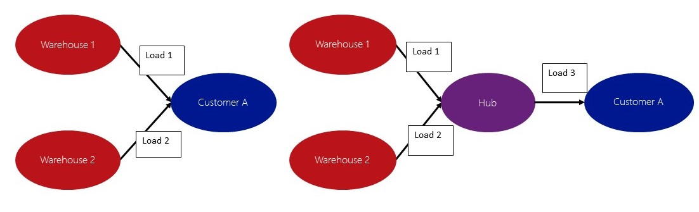

Planen Sie Belastungen mit Hilfe der Hub-Konsolidierungsübersicht.
Important
Dynamics 365 for Finance and Operations hat sich zu speziell entwickelten Anwendungen entwickelt, mit denen Sie bestimmte Geschäftsfunktionen verwalten können. Weitere Informationen zu diesen Änderungen finden Sie im Dynamics 365-Lizenzierungshandbuch.
Dieser Artikel beschreibt die Funktion zur Konsolidierung von Lieferungen in einem Hub bei der Lieferung von Waren aus unterschiedlichen Lagerorten an einen Kunden oder bei der Lieferung von mehreren Kreditoren an einen Lagerort.
Die Konsolidierung von Lieferungen in einem Hub kann bei der Lieferung von Waren aus unterschiedlichen Lagerorten an einen Kunden oder bei der Lieferung von mehreren Kreditoren an einen Lagerort hilfreich sein.
Erstellen von Ladungen
Bevor Sie die Hub-Konsolidierung verwenden können, müssen Sie die Option In Transitplanung auf der Seite Transportverwaltungsparameter aktivieren. Außerdem müssen Sie die Hubs für die Konsolidierung erstellen. Das folgende Diagramm zeigt ein Beispiel für die Hub-Konsolidierung. In diesem Fall gehen die Aufträge von verschiedenen Lagerorten an denselben Debitor. Die grundlegenden Ladungen werden ganz normal auf Basis von Aufträgen erstellt (über die Seite Ladungsplanungsworkbench). Um zwei Ladungen vor der Auslieferung in einem Hub zu konsolidieren, wählen Sie auf der Seite Ladungsplanungsworkbench im Feld Transport die Option Hub-Konsolidierung. Bei der Auswahl des richtigen Hubs für jede Ladung nutzen die Ladungen den Hub als "Abladeziel". Im Abschnitt Beschaffung und Bedarf auf der Seite Ladungsplanungsworkbench gibt es außerdem zwei "Transportanforderungspositionen". Sie können diese zwei Positionen dann zu einer neuen Ladung hinzufügen. Die neue Ladung umfasst beide Auftragspositionen und den Hub als "Aufladeadresse" sowie Kunde A als "Abladeziel". Die drei Ladungen können dann wie jede andere Ladung geroutet werden. Sie können jeden Spediteur auswählen, den das System für eine Ladung vorschlägt.  Die gleiche Methode können sie auch zur Konsolidierung von Ladungen für mehrere Umlagerungsauftrag nutzen. In diesem Fall ist Kunde A im obigen Diagramm ein Lagerort. Alternativ können Sie Ladungen für mehrere Aufträge, in denen Ladungen von unterschiedlichen Kreditoren an den selben Lagerort geliefert werden, konsolidieren. Sie können mehrere Konsolidierungs-Hubs nutzen und in mehreren Hubs für mehrere Ladungen aus verschiedenen Lagerorten konsolidieren. Nachdem Sie die grundlegenden Ladungen erstellt und die Option zur Hub-Konsolidierung verwendet haben, erstellen Sie über die konsolidierten Transportanforderungsposition neue Ladungen. Dann routen Sie die Ladungen.
{kind=link}